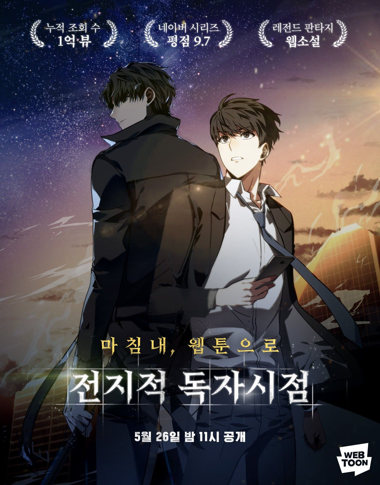

About
|
Omniscient Reader's Viewpoint (also called Omniscient Reader and often abbreviated to ORV) is an apocalyptic fantasy fiction webnovel, written by a Korean author duo writing under the pen name Sing Shong. It was originally written in Korean, and has been translated to English by Webnovel translators RainbowTurtle and A_Passing_Wanderer. |
 |
SummaryA novel called Three Ways to Survive in a Ruined World (written by the anonymous author tls123) has been written and published over the course of a decade, and Kim Dokja is the sole reader who has followed it to its ending. When the real world is plunged into the premise of Ways of Survival, Kim Dokja's unique knowledge of the novel becomes vital to his survival. Kim Dokja allies with Yoo Joonghyuk, the protagonist of Ways of Survival, in order to change the novel's original plot and more quickly approach the end of the story. As Kim Dokja and his party members progress through the scenarios, they face increasingly difficult threats and life-or-death challenges, struggling to stay alive and work together as they aim to destroy the <Star Stream> that demands their suffering. |
|
Extra Info
Hangul: 전지적 독자 시점 Related Links: |
|
Covers
All information in About is from the Omniscient Reader's Viewpoint Fandom Wiki